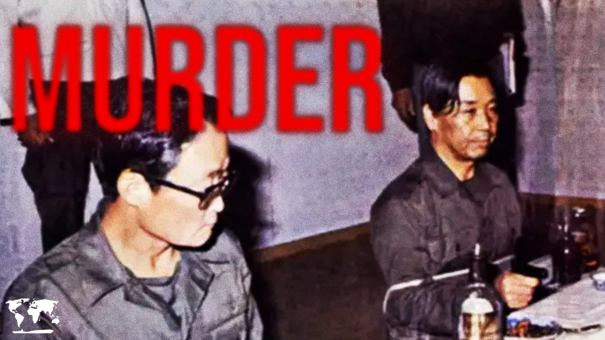
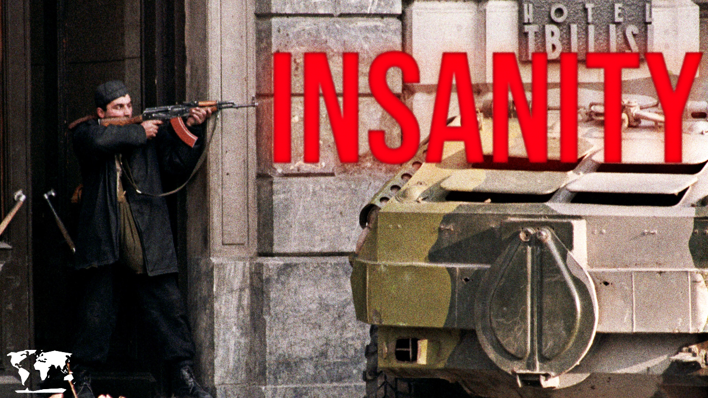
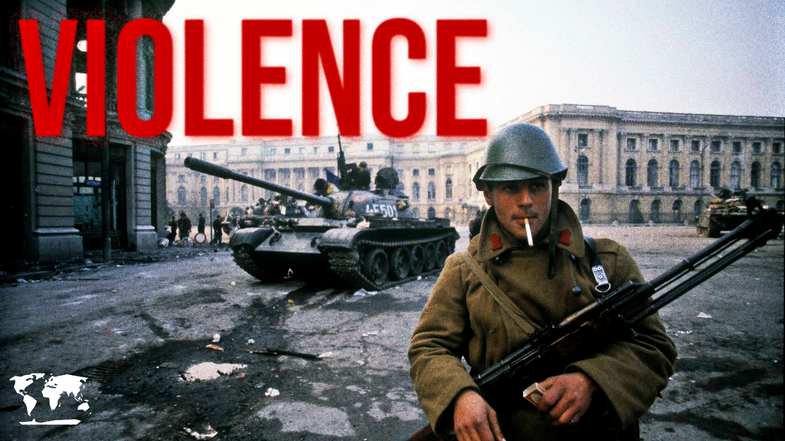

The Secret Society That Overthrew Korea's President
October 26, 1979: Park Chung-hee's assassination and the Hanahoe coup
View Sources (19 sources)
Published Mar 1, 2026 • 18 min

The Military Coup That Broke Chile
September 11, 1973: Allende, Pinochet, and America's first 9/11
View Sources (16 sources)
Published Feb 19 2026 • 20 min

When Georgia Had a Violent Coup
1991-1992: Zviad Gamsakhurdia vs. the Military Council
View Sources (18 sources)
Published Feb 4 2026 • 16 min

The Revolution That Ended Communist Romania
December 1989: Ceaușescu's fall, Timișoara uprising, and bloody revolution
View Sources (21 sources)
Published Jan 14, 2026 • 15 min